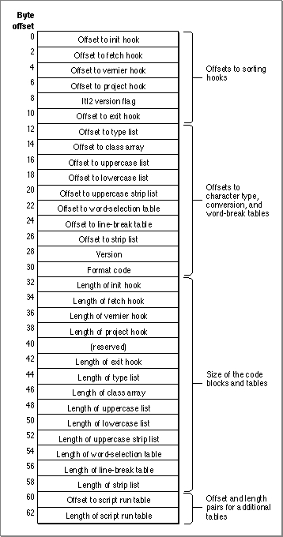

Legacy Document
Important: The information in this document is obsolete and should not be used for new development.
Important: The information in this document is obsolete and should not be used for new development.


Resource Header
The string-manipulation resource header allows you to access the code segments and tables that make up the resource. All fields in the header are 16-bit words. Each field designated as an offset contains the signed offset, in bytes, from the beginning of the resource to the specified code block or table. The header is followed by the actual code segments and tables, which may be in any order. Figure B-4 shows the structure of
the header.Figure B-4 Format of the string-manipulation resource header
 The header consists of four sections. The first section contains offsets to the sorting hooks; the second section contains offsets to tables for character type, case conversion and diacritical stripping, and word break; the third section contains the lengths of all of the code blocks and tables; the fourth section contains offset and length pairs for tables to be added in the future.
- The first section of the header contains a version flag and five offsets to the sorting hooks: init hook, fetch hook, vernier hook, project hook, and exit hook. The sorting hooks are string-comparison routines, code segments that control sorting behavior. The hooks can replace or modify the built-in U.S. sorting behavior, on a character-by-character basis.
The Itl2 version flag is a long integer value that describes the format of this string-manipulation resource. A value of -1 indicates that this string-manipulation resource is in the system software version 6.0.4 (or newer) format. In versions previous to 6.0.4, this element contains the offset to the reserved hook, another sorting hook. In versions previous to 6.0.4, the string-manipulation resource header stops at this point.
- The second section of the resource header contains the following elements:
- Offsets to the character-type tables: type list, class array.
- Offsets to the case conversion and diacritical stripping lists: uppercase list, lowercase list, uppercase strip list, strip list.
- Offsets to the word-break tables: word-selection table, line-break table.
- Version number. The version number of this string-manipulation resource.
- Format code. Contains 0 if the string-manipulation resource header stops at this point (true for system software version 6.0.4 ); contains 1 if the string-manipulation resource header has the format shown in Figure B-4 (true for system software version 7.0 and later).
- The third section of the header contains the lengths of all of the code blocks and tables for which there are offsets in the first two sections. The Script Manager requires valid length values in this section only for those tables that can be accessed through the
GetIntlResourceTableprocedure (the word-selection and line-break tables).- The fourth section contains offset and length pairs for additional tables. The first pair in this section is used for an optional table (
findScriptTable) defining characters of a subscript within a non-Roman script system. It is used by the Script ManagerFindScriptRunfunction. See "Script Run Table Format" beginning on page B-40. If this table is not present, the offset and length are 0.